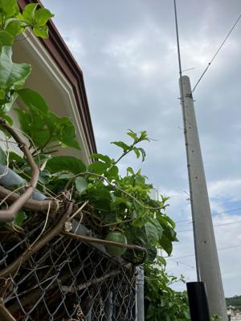

うるがいの話 ある日
最新: 変なオジサン【うるがいの話 ある日】とは 一日だけのプログです
『うるがいの話』の最新一日だけのプログで、通信料が少なく経済的だ。カニの画像をクリックすると全ての日付が載る『うるがいの話』サイトを表示します
|
|
【うるがいの話】 うるがい(ｳﾙｶﾞｲ urugai)とは、『もずくがに』の名前でとても大きくなります。 |
|---|---|
|
|
【カミマヤーの話】 猫のことを方言でマヤーといいます。カミマヤー（kamimayaa）とは、神の猫のことです。 |
|
【たながぁの音楽】 たながぁ（ﾀﾅｶﾞｰ tanagaa）とは手長えびのことで、何種類かあり大きいのは車 エビぐらいになります。 |

|
【ぶながぁの話】 ぶながぁ(ﾌﾞﾅｶﾞｰ bunagaa)とは、赤い髪の毛、赤い身体、そして身長は１ｍ２０ｃｍ ぐらい、川の蟹を食べているの目撃された。場所は沖縄県国頭郡大宜味村のと ある村僕の隣近所に住んでいる爺さんから、聞いた話です。 |
|
|
【ギーマの話】 ギーマ(giima)とは、山原の里山に咲くスズランに似た、 花を付けます。実は食べられます、 気が付くと口の周りが紫になっています。 |
2023年04月28日 (金）変なオジサン
15:36

夜７時ごろ、ピンポンと音が鳴り玄関にでると白い雨靴を履き、作業服を着た
７０歳くらいのオジサンが立っていた。何かモゴモゴ小さく喋っているが、聞
き取れない。必死に聞くと『時給２千円で、庭の木を剪定します』と言ってい
る。あ、いいですと断ると、『自分で剪定するのですか』と寂しく帰って行っ
た。

コドモが、家に来た（ご飯を食べに）。それから証明写真を撮るにいく準備し
た。ところがネクタイが結べない、オトーさん教えて。ホーどれどれ、１０分
程かかるが何とか出来た。私は、社会人になる前、姉からを一本結び（？）と
いう簡単な結びかたを教えてもらった。入社半年頃経っただろうか、職場で仲
良くなったオッサン（石川清安）が、ネクタイの結び方おかしいでっせ、と男
結び（？）を教えてくれ、今に至る。
１５時２９分 ビットコインの総資産 ￥１１、５３７（↑２７５）